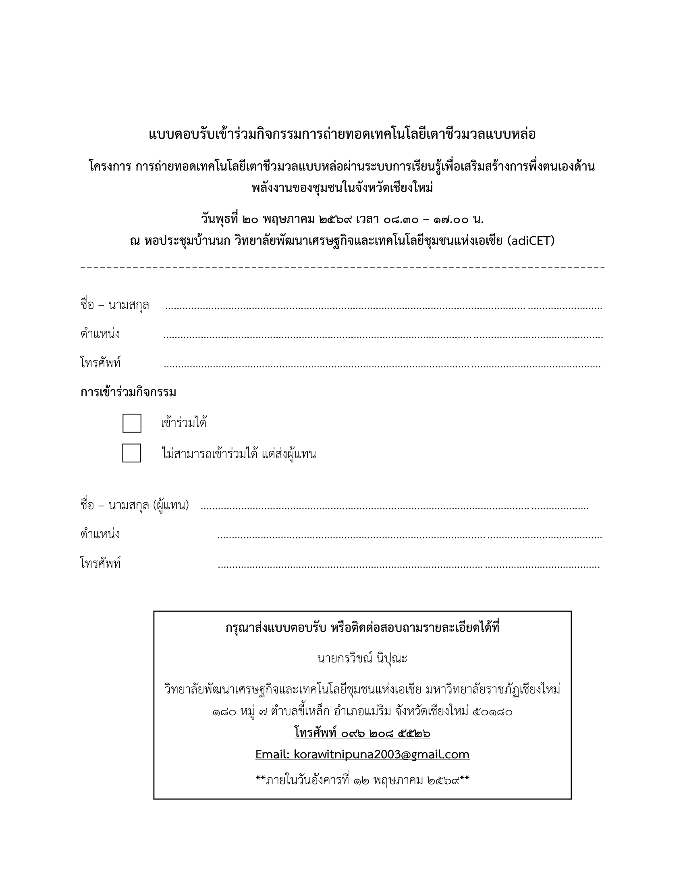

🖨 บันทึก PDF / พิมพ์
💡 ตอน print:
1. Paper size:
Letter
(ตามต้นฉบับ)
2. Margins:
None
3. ปิด
"Headers and footers"
📝 ถ้าตำแหน่งข้อความเพี้ยน
— แก้ค่า top/left ใน CSS class
.fld-name
,
.fld-pos
, ฯลฯ ได้

นายภิญโญ ตัณรัตนมณฑล
กรรมการผู้จัดการ บริษัท เอ็นดีเอฟ เดฟ จำกัด
๐๙๐ ๘๙๑ ๔๕๐๔
✓
นางศรุตา ฉายแสงมงคล
ผู้จัดการโครงการ
๐๙๓ ๑๓๔ ๓๖๓๒